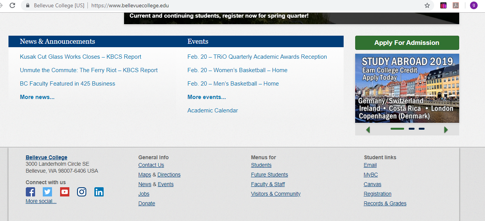
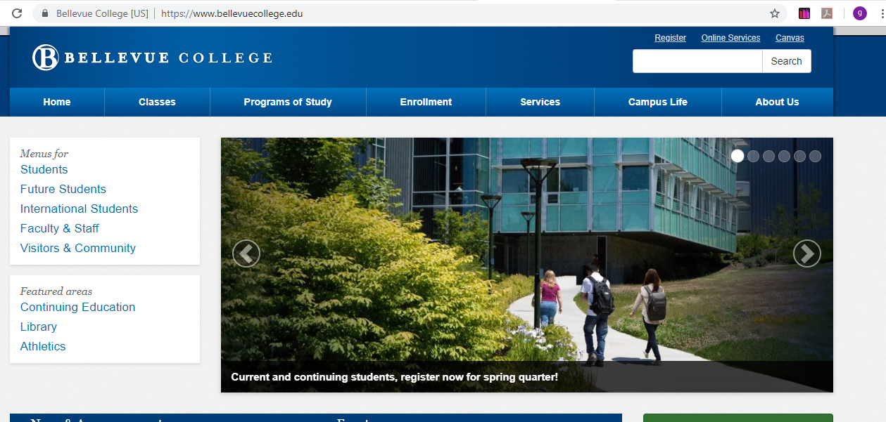
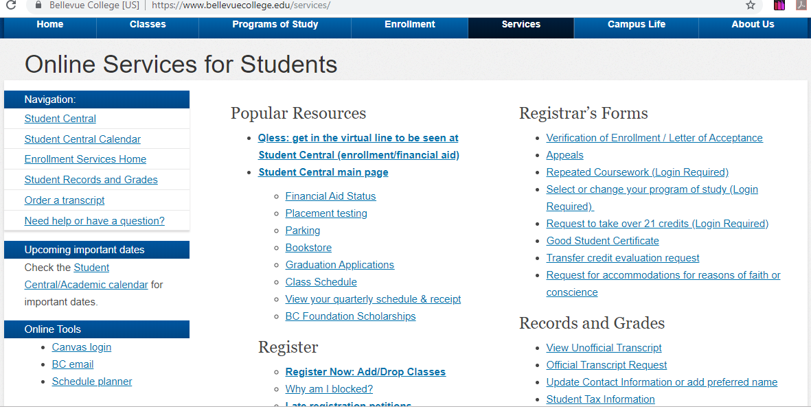
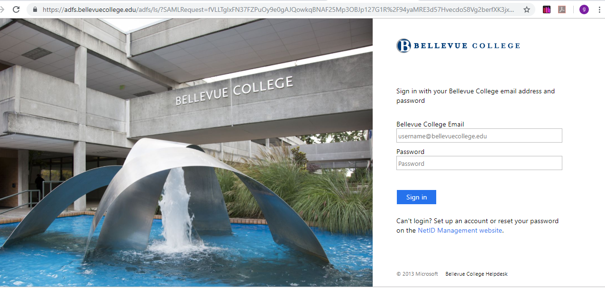
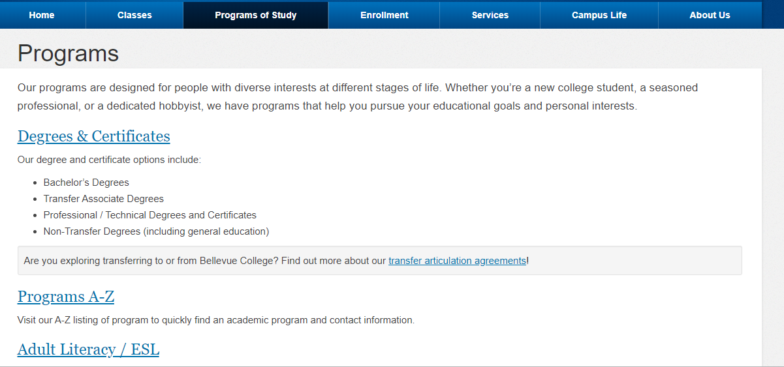

Bellevue College is an educational website, Bellevue College is located within the city limits of Bellevue, Washington, along the Interstate 90 corridor. The main campus is situated on 100 wooded acres within sight of the Cascade Range and the Puget Sound, approximately five miles from downtown Bellevue and 10 miles from downtown Seattle. As the third largest institution of higher learning in Washington, we open the door of higher education to more than 32,000 students each year.
Top

The responsive navigation for this website is pretty good and very effective.
When the user first accesses this website, he would see the most important information’s of this institution, all the multiple services that the school offers, and the student’s needs.
The contents of the website are pretty much organized and very efficient. It includes all the news and the upcoming events of the faculty.
Its menu is very particular, it has access to students, future students, faculty, stuff and visitors.
Rating: foo out if bar
Top

When accessing this website with a desktop, tablet or phone, the layers perfectly fits the width of the device.
The website has a very good design in any device with any different width, the color of Bellevue college is blue and very satisfying to the eye of the user.
The images the website used were carefully picked, they are very professional and function well with the design of the home page. Bellevue College is an educational website, it doesn’t include any ads that will distract the user from accessing any of its services. The responsive design is pretty good and very easy to read.Content analyzing the navigation and structure of the site
Rating: foo out if bar
Top

The content of this Website seems to be very fresh and useful, the design and the content matches, the responsive design solutions seems to fit the content and the perceived target user community very well and the design, fulfils the functionality of the content for users and all the information are easy to access. They are presented in a very good order and a nice way to be found by the eye of the user. Content analyzing the Content of the site
Rating: foo out if bar
Top

Bellevue College website interactivity seems to work very well. Students can log in canvas and any other domain easily. The user can check the classes and other online services, enrollments and Campus life. It is very easy to use and the most important thing I this website is that the students can set up to receive notification for any emergency alerts (Power outage, earthquake or weather alerts ) on a text messages Content analyzing the interactivity of the site
Rating: foo out if bar
Top

Bellevue college website is a pretty good website, I think that they have a pretty good design. It is very organized and has all the information that the user can be looking for in the home page. I would not recommend any improvements. It is just awesome website. Content analyzing the Improvements and Suggestions of the site
Rating: foo out if bar
Top